library(factoextra)
library(tidyverse)
df_url="https://raw.githubusercontent.com/jmayberr/math133-stat-learning-fall2026/refs/heads/main/Datasets/election2016.csv"
election2016=read.csv(df_url)
cb_palette <- c(
"#000000", # black
"#E69F00", # orange
"#56B4E9", # sky blue
"#009E73", # bluish green
"#F0E442", # yellow
"#0072B2", # blue
"#D55E00", # vermillion
"#CC79A7" # reddish purple
)Module 5 R Tools: fviz-ness
The factoextra package has some great tools for obtaining additional visualizations of unsupervised method results. These notes will cover a few, many of which are just glorified and nicer looking versions of plots we have already made. Start by loading the package (installing first if needed) as well as the election2016 dataset:
Tools for PCA
Recall that a scree plot shows the percentage of variation explained by component number. The command for recreating this is fviz_eig() (note that changing the row names of election2016 to the state names before computing PCs is the easiest way to ensure nice labeling in other plots below):
rownames(election2016) <- election2016$state
election_pc=prcomp(election2016[,2:9],scale=TRUE)
fviz_eig(election_pc,addlabels = T)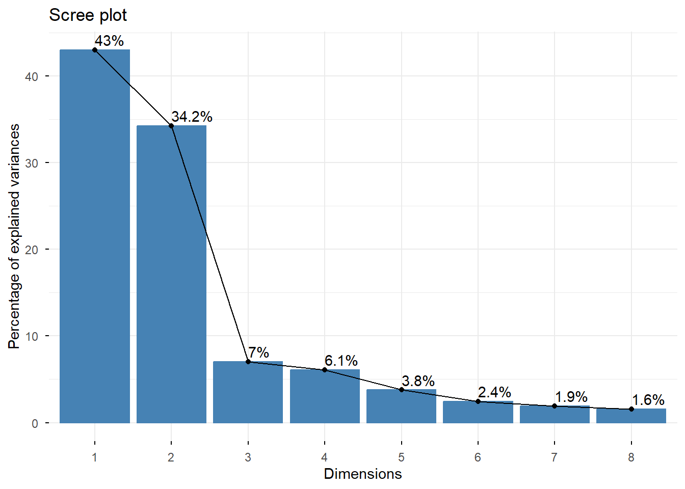
To plot the first two principal components (alternative to what we did in Section 5.1 usig ggplot), we can use fviz_pca_ind():
fviz_pca_ind(
election_pc,
geom = c("text","point")
)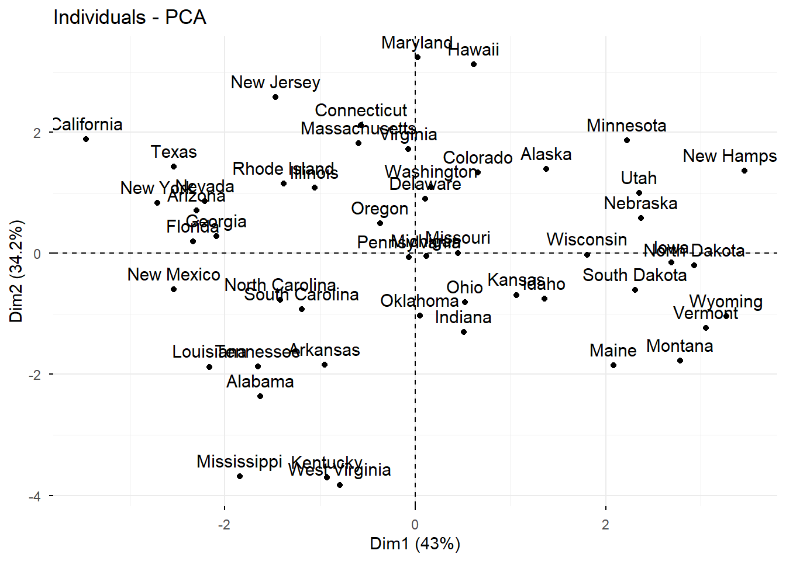
On nice feature of this is that you can add colors through the habillage1 argument. Just choose any categorical variable (like outcome) you want to group points by and throw it in there:
fviz_pca_ind(
election_pc,
geom = c("text","point"),
habillage = election2016$outcome,
palette=c("#2166AC", "#B2182B")
)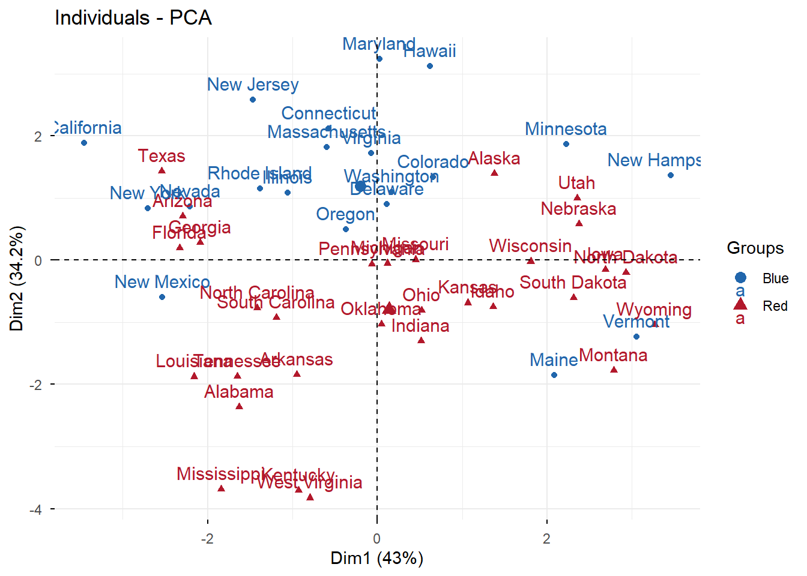
Variable correlations can be examined with a similar function2:
fviz_pca_var(election_pc)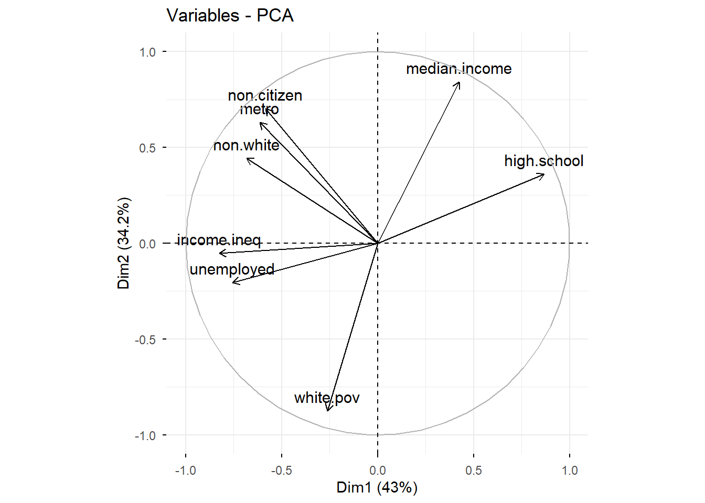
The arrows represent the correlation between the original variable and (PC1,PC2). Variables which are close together are themselves highly correlated. See Module 5.1 for additional interpretation.
The final function to cover for PCa is fviz_pca_biplot which shows a different type of biplot in which the variables and observations are given a balanced scaling3:
fviz_pca_biplot(election_pc,
addEllipses=T,
habillage = election2016$outcome,
palette=c("#2166AC", "#B2182B"),
col.var = "black")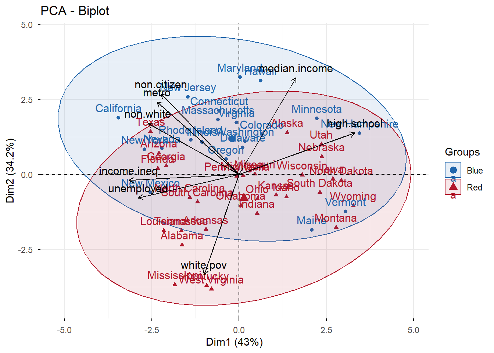
It looks a little busy, but pretty. The ellipses are a confidence region for each group in (PC1,PC2) space. Any points in one ellipse but not the other are clearly predicted by the PCA, but points in the overlap are uncertain.
Tools for K-means
The most important one here is a cluster visualization:
election_kmeans=kmeans(scale(election2016[,2:9]),centers = 3,nstart=100)
fviz_cluster(election_kmeans,
data=scale(election2016[,2:9]),
palette=cb_palette[2:4])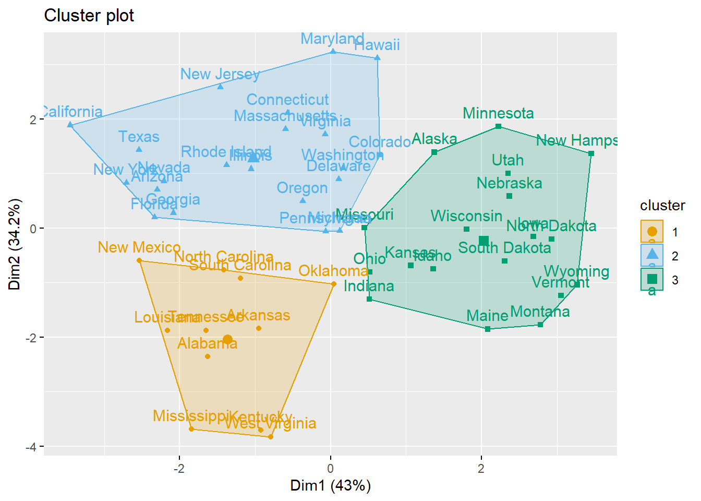
We made a similar plot from scratch with ggplot in Module 5.2, but this one looks prettier. The points are plotted based on their first two PCS and the clusters are colored according to the k-means output.
You can also make scree plots to suggest an optimal number of clusters:
fviz_nbclust(scale(election2016[,2:9]),
kmeans,
method="wss")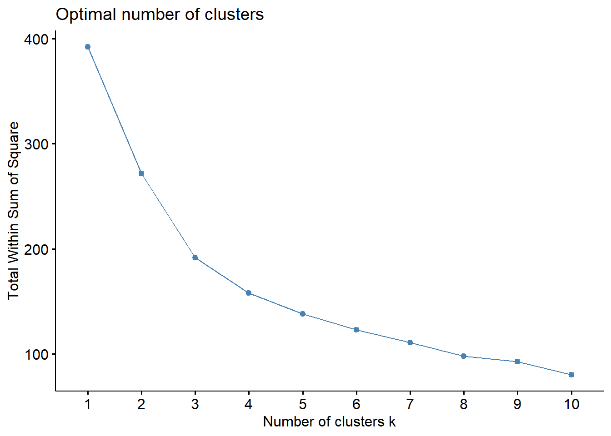
Unfortunately, there are no functions for doing the center visualizations (eg. bar, heatmap) so you’ll still have to do that the longer way!
Tools for Hierarchichal Clustering
To create a dendrogram with three groups colored by cluster, you can use
election_hc=hclust(dist(scale(election2016[,2:9])),method="complete")
fviz_dend(election_hc,
k=3,
color_labels_by_k = T,
palette=cb_palette[2:4])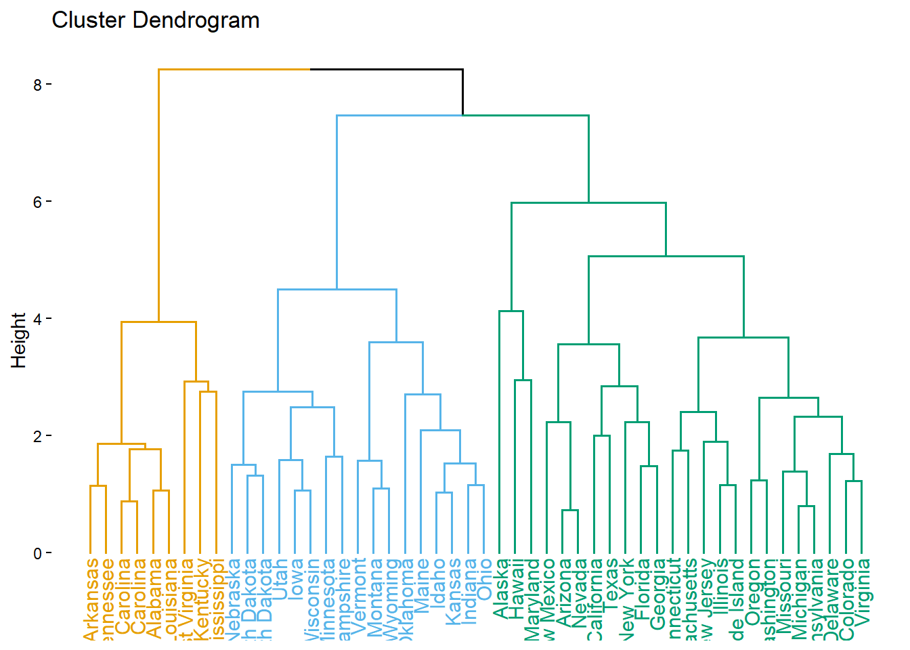
One cool option is to turn this into a circle:
fviz_dend(election_hc,
k=3,
color_labels_by_k = T,
type="circular",
palette=cb_palette[2:4])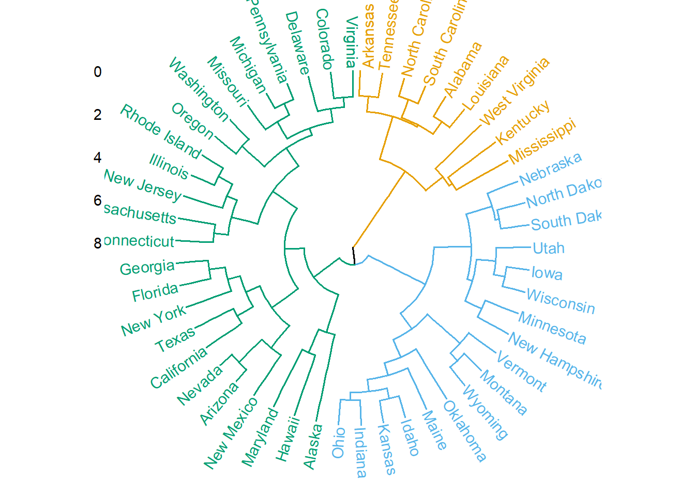
Another is to go bio on its ass and turn it into a phylogenic tree:
fviz_dend(election_hc,
k=3,
color_labels_by_k = T,
type="phylogenic",
repel=T,
palette=cb_palette[2:4])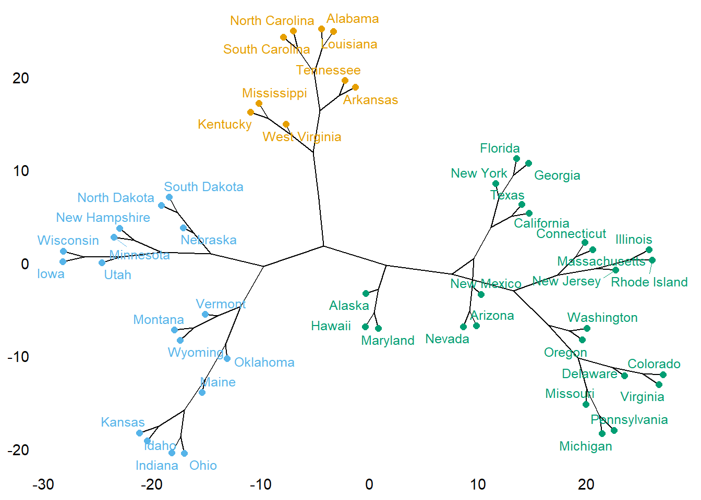
And now you know.
Silhouette Diagrams
We do not cover these types of plots in Module 5.1-5.3, but they are a commonly used tool for validating a clustering and can be applied to either k-means or hierarchichal outputs. The idea is to assign each data point a number between \(-1\) and 1 called the Silhouette Width4 (Si). Si values closer to 1 indicate a point that is “well-clustered” while values closer to -1 indicate poor clustering.
library(cluster)
election_scaled = scale(election2016[,2:9])
election_sil=silhouette(election_kmeans$cluster,
dist(election_scaled))
rownames(election_sil) = election2016$state # to display state names
fviz_silhouette(election_sil,
palette=cb_palette[2:4],
label=T) cluster size ave.sil.width
1 1 11 0.35
2 2 21 0.21
3 3 18 0.35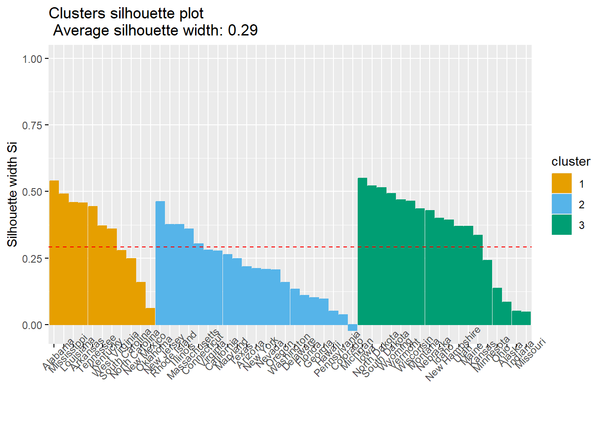
The red dashed line shows the average Si across all observations so the higher the value, the better. In our example, only one state had a negative Si so our clustering seems to work pretty well at separating states.
The process only needs a slight modification for hierarchical clustering.
hc_cut = hcut(election_scaled, k = 3,method="complete")
fviz_silhouette(hc_cut,
palette=cb_palette[2:4],
label=T) cluster size ave.sil.width
1 1 9 0.42
2 2 24 0.17
3 3 17 0.38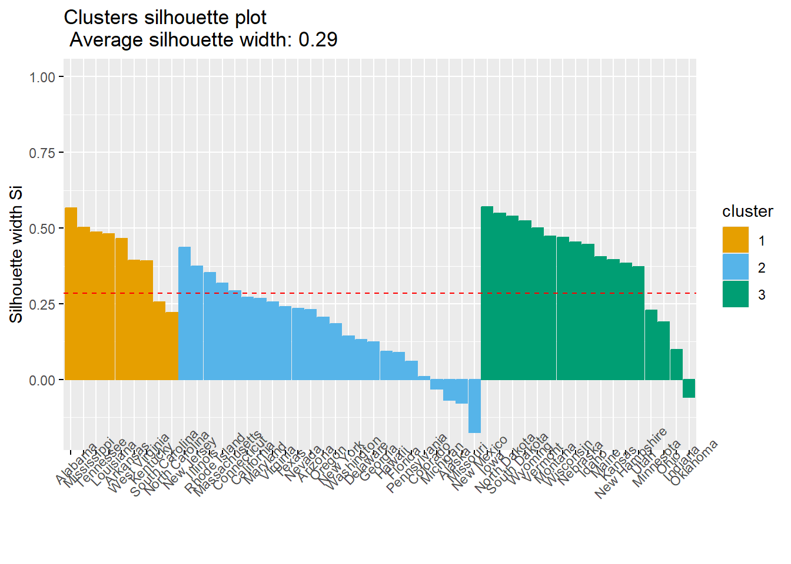
This looks both better and worse than the k-means. Clusters 1 and 2 contain mostly well separated states but Cluster 2 contains a lot of states which were hard to classify.
Footnotes
French for dressing or style.↩︎
The plot created here is basically what you get using base
biplotfunction withscale = 1except it doesn’t show the transformed points and hence is not really a “biplot”. ↩︎See Module 5 Theory Supplement.↩︎
It is calculated as follows. First, calculate the average distance between point \(i\) and all other points in its cluster; call this distance \(a_i\). Then calculate the minimum distance between the point and all points outside its cluster; call this \(b_i\). The Si for point \(i\) is then \((b_i-a_i)/\max(a_i,b_i)\). See this site for more on validation statistics.↩︎